机器学习+生信多组学联合构建牙周炎"线粒体功能障碍与免疫微环境"关联网络
原文：https://mp.weixin.qq.com/s?__biz=MzAwMzIzOTk5OQ==&mid=2247527168&idx=1&sn=0791d2bf53a9a60015577f892b10d370&chksm=9b3c1250ac4b9b46debaadf6aad79d2e8340f932d93fc6b5d725a1a846040a904025b1dcc9ec#rd 合集：单细胞教程全收录 / 文献速递
写在前面
这又是一篇在Acknowledgement对我们进行致谢 的文章：
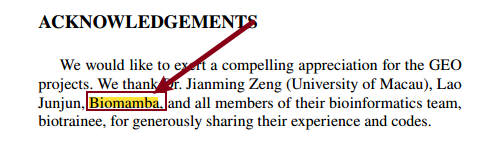
内容简介：****
牙周炎是一种炎症性疾病，有多种致病因素，通常表现为牙龈退缩、牙槽骨吸收，甚至牙齿脱落。牙周炎在全球的患病率为50% ，仍然是成年人牙齿脱落的主要原因。根据最新研究结果显示，线粒体功能障碍可能与牙周炎的发生和进展有关 。重庆医科大学张晓南团队采用了一种综合方法，通过整合多种方法来阐明线粒体功能障碍与牙周炎免疫微环境之间的复杂关系。主要发现是线粒体功能障碍可以与牙周炎中的免疫微环境相互作用，通过检测牙周炎患者牙周组织中线粒体功能的改变，发现了潜在治疗靶点，并为牙周炎制定个性化的临床管理策略。
期刊：Inflammation
IF：4.2
原文链接：
https://doi.org/10.1007/s10753-023-01851-0
这里也预祝我们的粉丝们早日命中心仪的期刊，若是大家觉得我平时分享的代码或生信教程有那么点 好用，可以在文章里以这种格式致谢Biomamba，希望咱们这个系列也能更新个百八十篇 :
:
*
Since Biomamba and his wechat public account team produce bioinformatics tutorials elaborately and share code with annotation, we thank Biomamba for their guidance in bioinformatics and data analysis for the current study.
如果需要数据分析指导 、生信热点全文复现 、自测数据个性化分析 辅导，欢迎联系客服微信[Biomamba_yunying]
一、摘要
牙周炎是一种发病率较高的炎症性疾病，影响牙齿的支持组织，包括牙龈和骨骼。近期研究表明，线粒体功能障碍可能与牙周炎的发生和进展有关 。因此作者想要揭示线粒体功能障碍与牙周炎免疫微环境之间的相互作用。作者使用了MitoCarta 3.0、Mitomap和GEO数据库 的公开数据，通过五种集成机器学习算法筛选出中心标记，并通过湿实验进行验证。随后利用单细胞测序数据来揭示hub基因的细胞类型特异性表达水平，构建了一个来区分牙周炎和健康对照人工神经网络模型。作者还使用无监督的共识聚类算法揭示了线粒体功能障碍相关的牙周炎亚型，并且利用CIBERSORTx和ssGSEA算法计算免疫和线粒体特征，从而鉴定出了两个与中枢线粒体相关的标记物(CYP24A1和HINT3)。单细胞测序数据结果显示，HINT3主要在树突状细胞中表达，而CYP24A1主要在单核细胞中表达。基于hub基因的人工神经网络模型有明显的诊断性能。无监督共识聚类算法揭示了两种不同的线粒体表型。hub基因与免疫细胞浸润和线粒体呼吸链复合物表现出很强的相关性。该研究确定了两种可能作为免疫治疗潜在靶点的中枢标志物，并为未来研究线粒体在牙周炎中的作用提供了新的思路。
二、前言
牙周炎是一种多种因素共同作用的炎症性疾病，典型表现为牙龈萎缩、牙槽骨吸收，甚至牙齿脱落。线粒体是高度信号传导、生物合成、生物能量和动态的细胞器，对维持细胞稳态至关重要。根据最新研究结果，线粒体成分和代谢产物可以作为线粒体损伤相关分子模式(mtDAMPs)发挥作用，并在释放到细胞外环境时通过激活模式识别受体(PRRs)促进炎症。越来越多的证据表明，线粒体功能障碍可能对炎症、活性氧(ROS)稳态和牙周炎进展中的细胞凋亡产生破坏性影响，线粒体功能障碍的一个显著特征是必需线粒体调节因子的损伤；并且根据相关报道，与健康个体相比，牙周炎患者的牙龈组织表现出异常的线粒体结构和功能，但是迄今为止仅阐明了有限的线索。例如，Bcl-2的失活导致线粒体细胞色素c释放增加，并引发胱天蛋白酶-3介导的细胞死亡，突显了其在线粒体功能失调中的作用。通过氧化磷酸化(OXPHOS)，线粒体被认为是ROS产生的主要来源。与健康线粒体相比，受损线粒体产生更多的ROS，牙周炎患者体内检测到异常升高的氧化应激生物标志物。根据文献报道，ROS的积累可能会危及牙槽骨代谢，因为它可以促进破骨细胞分化和成骨细胞凋亡，但抑制成骨细胞分化。最近的研究证实了局部免疫稳态与牙周炎进展之间的实质性关系。然而，牙周炎患者牙龈组织线粒体功能与免疫微环境之间的相互作用是一个复杂的过程，迄今为止没有更加详细的报道。作者采用了一种综合的方法，整合了多种方法来阐明线粒体功能障碍与牙周炎免疫微环境之间的复杂关系。主要利用生物信息学方法，并使用临床样本来进行湿实验验证。通过检测牙周炎患者牙周组织中线粒体功能的改变，目标是对潜在治疗靶点提供有价值的见解，并为这种疾病制定个性化的临床管理策略。数据来源：
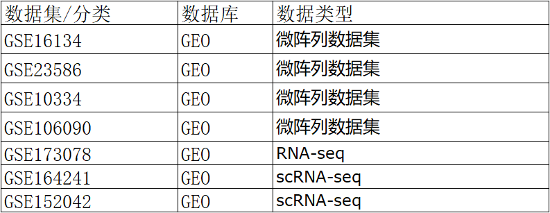
三、方法与材料
临床样本采集
本研究主要利用生物信息学方法，并采用临床样本来验证一些感兴趣的发现。本研究以健康牙龈组织标本为对照组。招募了24名签署知情同意书的参与者，包括12名患有全身性中度或重度牙周炎(II期和III期，B级)的患者和12名需要进行冠延长手术的牙周健康患者。局部麻醉后，在重庆医科大学口腔医院进行约2 mm³的牙龈组织活检。活检从颊龈缘获得，所有程序在无菌条件下进行。从接受冠延长手术的个体和牙周炎患者严重炎症和骨质流失的区域进行牙龈活检。共采集组织24片，每3对(包括健康牙龈组织3片和牙周炎牙龈组织3片)组织分别用于定量实时荧光定量pcr(qRT-PCR)、免疫印迹(WB)、苏木精-伊红(HE)和免疫组化(IHC)分析
组织学分析
收集牙周炎患者和健康对照者的牙龈组织，依次在4%的缓冲福尔马林中固定48小时。随后，用分级乙醇脱水，石蜡包埋，切成5 μm的切片。对切片进行HE染色，以便进行组织学分析。
** **
免疫组织化学分析
使用4%多聚甲醛溶液固定牙龈组织样品24小时，然后按照上述步骤脱水、包埋。细胞色素c是线粒体呼吸链的重要组成部分，其释放受Bcl-2蛋白的调节。鉴于观察到线粒体呼吸链和免疫细胞之间的显著相关性，细胞色素c被选为感兴趣的标记物。为了研究这两个经典标记在人类牙龈组织中的表达，进行了免疫组织化学染色。
** **
免疫印迹
进行蛋白提取和western blot分析。牙龈组织样品首先在液氮中粉碎，然后在RIPA裂解缓冲液中裂解，并加入蛋白酶抑制剂。样品的蛋白浓度采用增强型BCA蛋白测定试剂盒测定。随后，将30 μg的蛋白质加载到15%的十二烷基硫酸钠聚丙烯酰胺凝胶上并电泳。然后将蛋白质转移到聚偏二氟乙烯膜上，然后用5%的牛血清白蛋白(BSA)在室温下阻断2小时。然后将膜与一抗、细胞色素C和β-肌动蛋白在4°C下孵育过夜。用TBST洗涤后，用酶标二抗室温孵育2小时。采用增强型化学发光试剂和ChemiDoc™MP成像系统对靶蛋白结合进行可视化。
定量实时PCR
手术切除后立即将新鲜组织放入RNA保存剂中，然后在4°C下保存过夜，随后在- 80°C下保存，直到提取RNA用于PCR分析。从6例患者中收集6块牙龈组织，其中3块来自对照组，3块来自牙周炎组。
从组织样本中分离总RNA，并使用NanoDrop ND-1000分析仪进行定量。GoScript™逆转录混合试剂(Promega)用于将RNA逆转录为cDNA。在CFX96 qRT-PCR检测系统上，使用TB Green Premix Ex Taq II(Tli RNaseH Plus)(2×)(Takara编号RR820A)以及针对两个关键失调的线粒体相关基因(DMRGs)，即CYCS和BCL2的引物进行qRT-PCR检测，同时以GAPDH作为内参基因。该实验重复进行了三次。通过公式计算倍数变化（FC）。
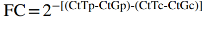
公共数据的收集和准备
在基因表达数据库(GEO)获取数据，包括微阵列数据集(GSE16134、GSE23586、GSE10334和GSE106090),RNA测序数据集(GSE173078)以及单细胞RNA测序数据集(GSE164241和GSE152042)。为了解决重复的基因符号问题，计算GSE16134、GSE23586和GSE10334的基因表达值为中位数值。接下来，使用R软件包“inSilicoMerging”将微阵列数据集合并，然后通过R软件包“sva”中的ComBat方法去除批次效应。随后，将合并后的数据集随机划分为训练队列(n=394)和测试队列(n=169)。对于单细胞RNA测序数据集，使用R软件包“Seurat”来执行诸如质量控制、标准化、整合、批次校正、主成分分析、细胞聚类、均匀流形近似和投影(UMAP)降维、数据集整合等各项任务，并借助R软件包“single R”基于免疫细胞的流式细胞术纯化转录组数据集(MonacoImmuneData)对细胞类型进行注释。
** **
DMRGs的鉴定
使用R软件包“limma”评估训练队列中的差异表达基因(DEGs)，统计显著性由p值<0.05和|log₂倍数变化(FC)|>0.5确定。从MitoCarta3.0数据库中获得了1136个基因和149条有强烈线粒体定位支持的线粒体途径(MitoPathways)。通过将1136个线粒体相关基因和DEGs进行交集，确定了牙周炎中的差异表达线粒体相关基因(DMRGs)。然后，使用R软件包“factoextra”(https://cloud.r-project.org/package=factoextra/)对DMRGs进行主成分分析(PCA)，以基于前两个主成分在健康组和牙周炎组中样本的聚类情况可视化。随后，使用sangerbox对DMRGs进行GO/KEGG/线粒体(Mitopathway)途径功能富集分析，并通过R软件包“circlize”进行可视化。
Hub DMRGs的识别
使用了五种独立的机器学习算法来筛选出牙周炎中的关键差异表达线粒体相关基因(DMRGs)，包括单变量逻辑回归、最小绝对收缩和选择算子(LASSO)回归、支持向量机递归特征消除(SVM-RFE)、XGBoost和随机森林。单变量逻辑回归通过R软件包“glmnet”进行，选取p值<0.05的基因为逻辑回归诊断基因候选。LASSO回归也通过“glmnet”进行，通过十折交叉验证生成诊断基因候选。SVM-RFE通过R软件包“e1071”进行，通过训练队列训练样本，对基因候选的得分进行排序，并估计前20个基因组合的十折交叉验证误差。选择具有最少十折交叉验证误差的基因组合作为SVM-RFE生成的诊断基因候选。XGBoost通过R软件包“XGBoost”进行，选取具有前20个特征的基因为诊断基因候选。使用随机森林软件工具构建了随机森林模型，并选取具有前20个基尼系数的DMRGs作为诊断基因候选。最后，基于上述五种机器学习算法筛选出的重叠DMRGs被选为牙周炎中的关键线粒体相关基因(MRGs)，并进行了可视化。
人工神经网络模型的构建与验证
根据综合机器学习算法选出的关键MRGs，使用R软件包“neuralnet”以训练队列为基础开发了一个人工神经网络(ANN)模型。处理过的训练数据被输入到ANN模型中。该ANN模型设计为包含两个输入层、四个隐藏层和两个输出层。为了防止过拟合并优化模型，使用R软件包“Caret”进行了五折交叉验证。此外，为了评估ANN模型的稳健性和临床影响，进行了受试者工作特征(ROC)分析和决策曲线分析(DCA)。随后，在测试队列和其他外部验证数据集中验证了关键MRGs，并使用单细胞RNA测序(scRNA-seq)数据集分析了关键DMRGs的细胞特异性表达水平。
牙周炎免疫特性的探讨
根据综合机器学习算法选出的关键MRGs，使用R软件包“neuralnet”以训练队列为基础开发了一个人工神经网络(ANN)模型。处理过的训练数据被输入到ANN模型中。该ANN模型设计为包含两个输入层、四个隐藏层和两个输出层。为了防止过拟合并优化模型，使用R软件包“Caret”进行了五折交叉验证。此外，为了评估ANN模型的稳健性和临床影响，进行了受试者工作特征(ROC)分析和决策曲线分析(DCA)。随后，在测试队列中验证了关键MRGs。
线粒体呼吸链和线粒体病理通路的生物信息学评价
从MITOMAP数据库中提取线粒体呼吸链相关基因，采用Spearman相关分析检测线粒体呼吸链与枢纽DMRGs的相关性。此外，利用单样本GSEA (ssGSEA)方法测定每个标本中149条mitpathways的活性，并选择12条最活跃的mitpathways和12条最受抑制的mitpathways进行进一步分析。
WGCNA
根据它们的平均表达值，选取了排名前5000的mRNAs，并利用R软件包加权相关网络分析(“WGCNA”)来识别与MitoPathways相关的模块中的基因(教程可参考：一文搞定单细胞/空间转录组的WGCNA分析)。构建基因树状图时，最小基因组大小设定为30，并确定了16的幂次。使用R软件包“ggplot2”来可视化模块特征基因与MitoPathway之间的相关性。根据最高的相关系数和显著的p值，识别出与最活跃的MitoPathways相关的关键模块。在关键模块中，Module Membership(MM)>0.8且基因重要性(GS)>0.1的与MitoPathway相关的基因被视为显著基因。此外，还对这些基因进行了基于KEGG的功能富集分析(手把手教你做单细胞测序数据分析|7基因集富集分析)。
** **
揭示牙周炎的线粒体表型模式
作者使用R软件包“ConsensuClusterPlus”基于41个DMRGs表达谱的无监督聚类分析来识别与线粒体相关的牙周炎亚型。这种新颖的亚型分类策略已在肿瘤学领域得到应用，并可能为临床管理提供一些新的见解。为了确保聚类的稳健性，进行了1000次迭代，每次迭代包含80%的样本。根据共识得分的累积分布函数(CDF)曲线确定最佳聚类数量。为了探索牙周炎的免疫和线粒体特征，检查了以下指标：估计免疫细胞丰度、MitoPathway活性、Reactome通路活性以及线粒体呼吸链基因表达状态，这些指标得到了R软件包“jjPlot”（https://github.com/junjunlab/jjPlot）的验证。最后，通过R软件包“ggcor”研究了在不同牙周炎亚型中关键基因与mtDAMPs之间的相关性。mtDAMPs及其相应的PRRs是从先前的文献中提取的。
三、结果
结果总览：
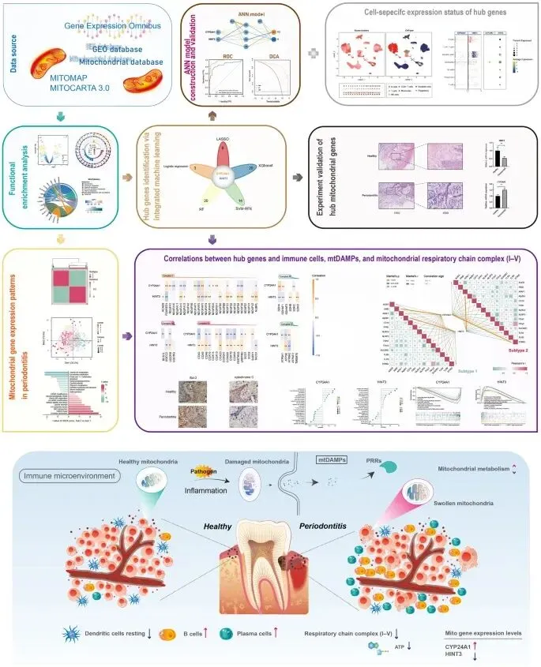
Fig.1****
1.牙周炎DMRGs的鉴定及功能富集分析
经过批次校正后，不同数据集之间潜在的混杂批次效应得到了显著降低(Fig.2A~B)。共发现41个DMRGs符合上述标准（|log2FC|>0.5且校正后的p值<0.05），并通过火山图对这些DMRGs进行了可视化(Fig.2)。PCA结果显示，基于DMRGs，牙周炎与对照组之间存在明显的表达模式差异(Fig.2D)。随后，功能富集分析揭示了GO/KEGG/Mito通路，发现DMRGs主要富集在与代谢相关的KEGG通路以及氧化还原过程、小分子代谢过程、药物代谢过程和小分子分解过程等生物学过程中(Fig.2E)。此外，还分析了Mitocarta 3.0数据库中的Mitopathways，发现DMRGs与“线粒体动态与监测”和“代谢”相关(Fig.2F)。
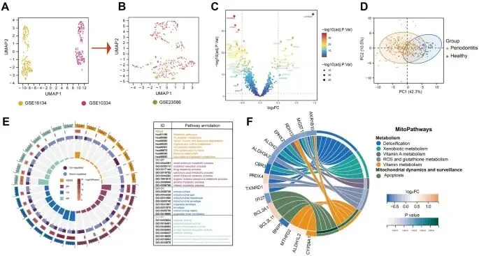
Fig.22.Hub DMRG的识别利用五种机器学习算法来识别中心DMRG，使用上述41个基因作为单变量逻辑回归分析(Fig.3A),LASSO回归(Fig3.B~C),SVM-RFE算法(Fig3.D),XGboost算法(Fig3.E)和随机森林算法(Fig3.F~G)的输入。通过将上述五种算法的输出进行交集，确定了两个中枢DMRG:CYP24A1和HINT3(Fig3.H)。
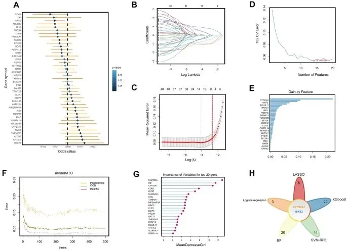
Fig.33.ANN模型的构建与验证**** 随后作者构建了一个基于中枢基因的ANN模型，以区分牙周炎和健康对照组(Fig.4A)。采用训练队列、内部验证队列和具有十多个样本的独立公共数据集来确认模型的准确性。绘制了ROC曲线，ANN模型在训练队列中表现出很高的辨别能力，曲线下面积(AUC)值为0.954。内部验证队列(AUC=0.860)(Fig.4B),独立数据集:GSE16134(AUC=0.903)、GSE10334(AUC=0.884)、GSE173078(AUC=1.757)和GSE106090（AUC>0.917）(Fig.4C)都证明了这一点。之后，DCA曲线说明了ANN模型在训练(Fig.4D)和内部验证(Fig.4E)队列中的临床意义。
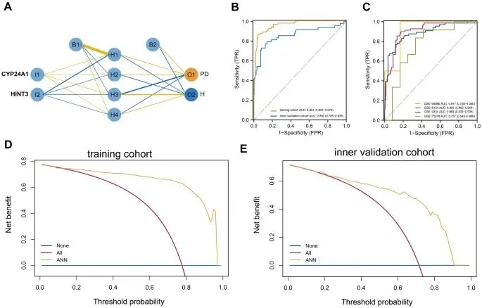
Fig.4
4.Hub基因验证与探索****Hub DMRG在内部验证队列中的表达状态与训练队列保持一致( Fig.5A~B)。然后，使用临床样本进行Hub DMRG的实验验证。与健康对照组相比，牙周炎组表现出明显更高程度的浸润到牙龈组织的炎性细胞中(Fig.5C)。此外,qRT-PCR的结果与Hub DMRG的结果一致(Fig.5D~E)。为了探索所鉴定的中枢DMRG的细胞特异性表达，整合了GSE164241和GSE152042的scRNA-seq数据，并对免疫细胞类型进行了注释(Fig.6A)。绘制了每个样本的免疫细胞比例，在牙周炎样本中发现了增加的B细胞(Fig.6B)。点图和气泡图表明，HINT3 主要在树突状细胞中表达，而CYP24A1主要在单核细胞中表达(Fig.6C)。
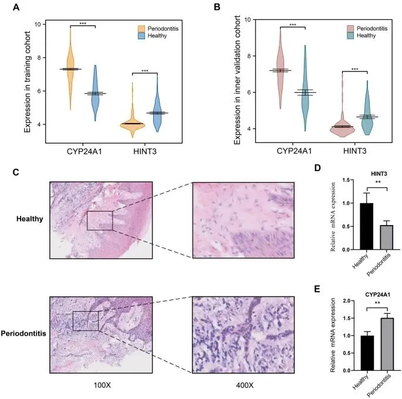
Fig.5
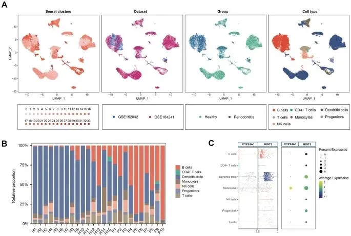
Fig.6
5.牙周炎的免疫特征**对每个样本的免疫细胞浸润水平进行了探究。根据CIBERSORTx的结果，牙周炎和健康样本之间存在明显疫细胞浸润水平差异，牙周炎样本中发现浆细胞增加。同时还探索了每对免疫细胞之间的相关性， 发现正相关性最强的免疫细胞对是活化的肥大细胞与静息的自然杀伤细胞(Fig.7C)。此外，还计算了Hub 基因和免疫细胞之间的相关性，发现 与CYP24A1正相关性最强的是浆细胞(Fig.7D)，而与HINT3正相关性最强的息树突细胞(Fig.7E)。为进一步探究hub DMRGs的功能，作者进行了GSEA分析。**CY4A1所改变的通路涉及细胞因子-细胞因子受体相互作用、细胞凋亡以及趋化因子信号通路**(Fig.7F)。HINT3影响的通路涉及肠道免疫网络IgA生成、趋化因子信号通路以及自身免疫性甲状腺疾病(Fig.7G)。
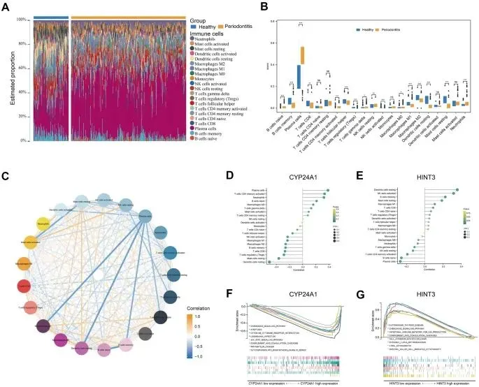
Fig.7
6.牙周炎的线粒体特征****作者计算了Spearman相关系数，随后评估关键差异甲基化相关基因（hub DMRGs）与呼吸链复合体（I - V）基因之间的关系。作者发现， 呼吸链复合体（I - V）基因与CYP24A1表达值呈明显负相关，而与HINT3表达值呈正相关(Fig.8A)。为了更好地理解牙周炎中的线粒体特征，对线粒体呼吸链的一种基本组成成分进行了探究。一般来说，细胞色素c是线粒体呼吸链的关键元素，负责哺乳动物细胞90% 的耗氧量。此外，在细胞凋亡过程中，细胞色素c的释放受通透性调节。线粒体外膜的通透性控制着细胞色素c的释放，而这一过程由Bcl-2蛋白调控。因此作者对Bcl-2和细胞色素c的表达量及蛋白水平进行了检测(Fig.8B~C)，进一步对患牙周炎个体和牙周健康个体中细胞色素c和Bcl-2的亚细胞定位进行了研究。
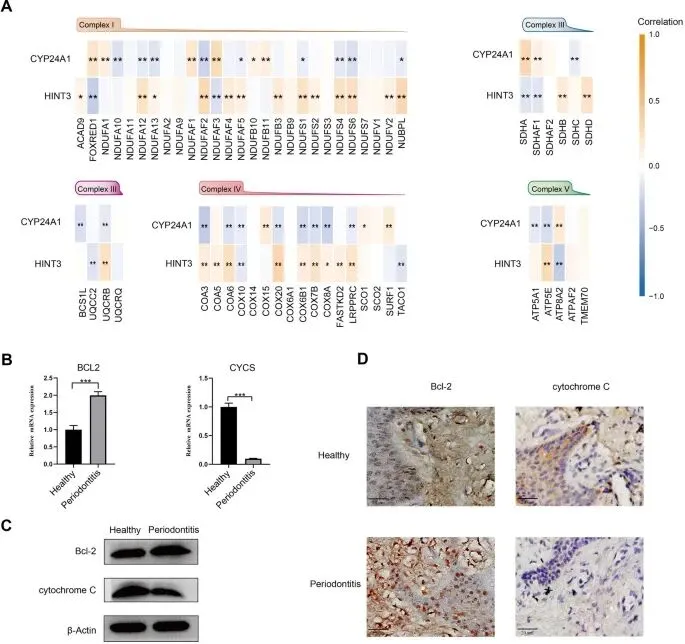
Fig.8
通过对牙龈组织进行免疫组织化学(IHC)分析(Fig.8D)发现在患牙周炎的牙龈上皮细胞中，Bcl-2主要定位于细胞核，而在健康牙龈上皮细胞中，细胞色素c呈弥散性分布于细胞质且含量较低。随后，通过单样本基因集富集分析(ssGSEA)算法计算每个样本的线粒体通路(MitoPathway)活性。根据log2倍变化值(log2FC)进行排序，选取前24条线粒体通路，并比较牙周炎样本与健康样本之间的通路活性(Fig.9A)。之后，进行加权基因共表达网络分析(WGCNA)以识别与线粒体通路相关的基因，结果发现黑色模块与线粒体通路 - 细胞凋亡之间存在最显著的正相关(Fig.9B)。选取基因显著性(GS)> 0.1且模块成员关系(MM)> 0.8的基因作为线粒体通路相关基因(Fig.9C)。随后对这些基因KEGG分析，KEGG结果显示，这些基因可能参与内质网中的溶酶体蛋白加工以及吞噬体相关通路(Fig.9D)。
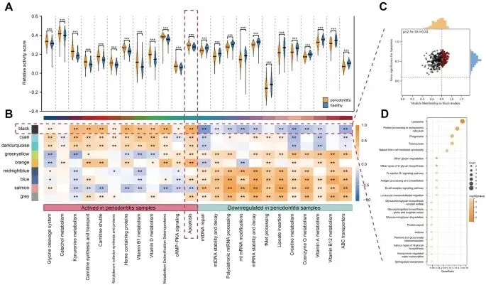
Fig.9
7.牙周炎中线粒体相关基因的表达模式****
利用牙周炎的DMRG表达谱，确定了两种不同的线粒体亚型（亚型1 n = 204；亚型2 n = 223），且k = 2被确定为最优数量(Fig.10A~C)。此外，亚型1和亚型2之间DMRG的不同表达状态也得到了展示(Fig.10D)。然后，对图6中亚型的DMRG进行PCA分析显示，亚型1和亚型2之间存在明显差异，且hub基因的贡献也被呈现(Fig.10E)。此后，研究了亚型之间免疫细胞比例(Fig.10F)、线粒体途径活性(Fig.10G)、Reactome途径活性(Fig.10H)以及呼吸链复合体（I - V）基因的相对表达状态(Fig.10I)。为了进一步探索两个枢纽DMRG（CYP24A1和HINT3）与mtDAMPs之间的潜在相关性，展示了mtDAMPs的受体(Fig.11A)，并且Mantel检验揭示了mtDAMPs的PRRs与两种亚型中hub基因之间存在显著且不同的相关性(Fig.11B)。
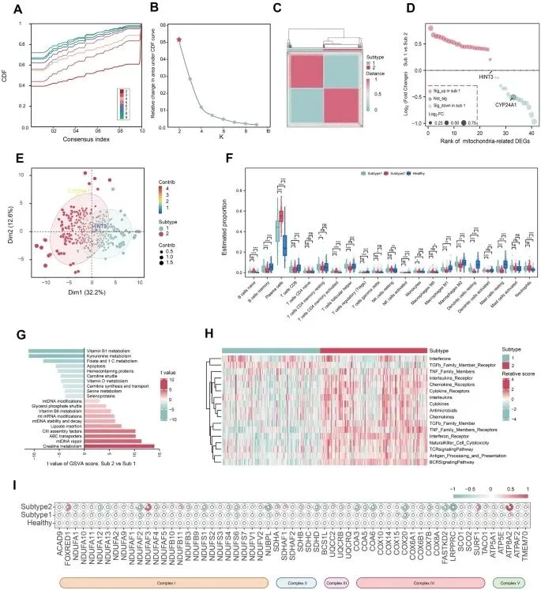
Fig.10
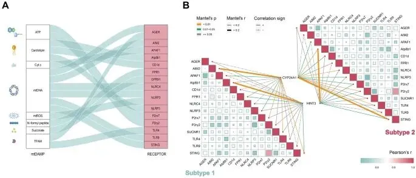
Fig.11
四、讨论
在本文中，作者利用公共数据集和临床样本，整合了生物信息学算法和湿实验，这些结果可以为牙周炎的免疫微环境和线粒体功能的病理生物学提供新的见解。主要识别了41个在牙周炎中失调的与线粒体相关的基因，两个hub线粒体生物标志物（CYP24A1和HINT3），基于hub基因的用于潜在临床诊断的人工神经网络模型，hub生物标志物的细胞类型特异性表达模式，两种与线粒体相关的牙周炎分子亚型，以及免疫微环境、线粒体特征（例如，线粒体损伤相关分子模式、线粒体呼吸链功能、MitoPathway活性和免疫细胞浸润水平）与hub生物标志物之间的相关性。
首先，筛选出41个在牙周炎中失调的与线粒体相关的基因。在这些基因中，通过一系列机器学习算法识别出两个hub DMRGs（CYP24A1和HINT3）。然后通过高通量数据和临床数据验证了这两个生物标志物。CYP24A1在牙周炎中的表达升高，而HINT3表达降低。CYP24A1，即细胞色素P450家族24亚家族A成员1，通过羟化侧链启动维生素D的降解。维生素D水平不足已被确定为牙周炎的一个重要风险因素，维生素D缺乏会导致牙槽骨的骨密度降低。然而，根据最近的一项孟德尔随机化分析，并没有证据支持循环维生素D水平与牙周炎的发展之间存在因果关联，因此，随后分析了其在单细胞测序数据中的细胞类型特异性表达模式，结果显示CYP24A1主要在树突状细胞中表达。根据文献报道，CYP24A1主要在树突状细胞中表达，并且可以减少维生素D在树突状细胞中的影响。关于HINT3，即组氨酸三联体核苷酸结合蛋白3，是影响核糖核苷酸α - 磷酸盐的核苷酸水解酶和转移酶之一。涉及HINT3的研究主要基于生物信息学，需要进一步的研究，例如相关机制，仍然空白。识别这两个与牙周炎相关的hub生物标志物可以促进疾病的早期检测、风险评估和疾病进展监测。这些生物标志物可以作为诊断工具，有助于更准确和及时的干预。
其次，作者分析了健康、牙周炎和与线粒体相关的牙周炎分子亚型中的免疫微环境和线粒体特征以及它们与枢纽生物标志物的相关性。同时结果揭示了线粒体功能障碍与牙周炎免疫微环境之间的关系，表明保持线粒体功能可能是管理牙周炎的有用干预措施。此外，这些理解为未来在牙周炎领域开发针对线粒体的免疫疗法铺平了道路。具体来说，使用CIBERSORTx估计了21种免疫细胞的相对比例，使用“SingleR”包估计单细胞分辨率下的免疫细胞比例。值得注意的是，在牙周炎中观察到B细胞和浆细胞浸润水平增加，而树突状细胞浸润水平降低。此外，Spearman相关性分析表明枢纽生物标志物与免疫细胞之间存在强相关性。呼吸链复合体的基因表达值大多降低，这可能导致牙周炎中ATP产生减少。ATP主要由葡萄糖通过线粒体氧化磷酸化产生，它由五个酶复合体和两个移动电子载体组成，它们共同执行氧化磷酸化。根据文献报道，适当的ATP水平对于免疫细胞激活是必需的，细胞ATP的不足可能限制有效的免疫防御。此外，受损的线粒体呼吸链（I - V）与浸润的免疫细胞之间观察到强烈的相关性，表明线粒体损伤可以在一定程度上调节牙周炎中免疫细胞的命运和功能。关于这一点，分析了线粒体呼吸链的一个关键组成部分即细胞色素c在牙周炎中的情况。细胞色素c是一种多功能蛋白，其功能在很大程度上取决于其在细胞内的特定环境以及其在线粒体电子传输链中的定位。当释放到细胞质或细胞外微环境中时，细胞色素c和其他线粒体内容物可以作为线粒体损伤相关分子模式，被免疫细胞的PRRs识别，然后可以招募更多的活化免疫细胞。Bcl-2家族成员对细胞色素c释放的调节可以引发一系列生化反应，导致caspase激活和凋亡。随后对细胞色素c和Bcl-2蛋白进行了组织学分析：与健康牙龈样本相比，牙周炎中细胞色素c蛋白水平降低，而Bcl-2的表达增加，并观察到Bcl-2核转移的趋势。然而，根据之前的文献的tunel免疫荧光染色结果和本文的GSVA算法结果，牙周炎中的凋亡水平增加，作者推测：“在牙周炎中，BCL-2可能阻止细胞色素c的释放”或“增加的免疫细胞浸润可能抑制凋亡。”牙周炎中炎症细胞的长期存活可能是由于凋亡受到抑制，这可能会导致一个恶性循环，推动牙周炎的发病机制。然而，目前的研究涉及的样本数量较少，这可能会导致不可避免的误差。为了充分验证推测，需要在更大临床队列中包含更多不同阶段和等级的牙周炎临床样本的研究。
第三，基于DMRGs结果识别了两种不同的牙周炎亚型。在两种牙周炎线粒体相关分子亚型中，展示了不同的免疫细胞比例、通路活性以及枢纽生物标志物与线粒体损伤相关分子模式之间的相关性。最近有文献通过透射电子显微镜揭示了牙龈组织中线粒体的结构特征，暗示了牙周炎的异常和受损的线粒体，例如线粒体肿胀和自噬体的迹象。异常线粒体更容易被渗透，这可能会增加线粒体损伤相关分子模式泄漏的风险。这些发现可以增强对线粒体功能障碍与牙周炎免疫微环境之间联系的理解。识别牙周炎的线粒体相关亚型可能从三个方面（亚型分类、预后评估、个性化治疗）为临床管理提供新的见解：亚型分类有助于理解牙周炎的异质性以及不同亚型在临床表现、预后和治疗反应方面的差异。预后评估使作者能够进一步研究这些亚型与患者结果之间的相关性，为临床决策提供有价值的信息。通过发现不同亚型之间基因表达或其他生物学特征的差异，可以开发个性化治疗策略，例如选择针对不同亚型中特定生物标志物的特定新药或治疗方案。
这是首次探索牙周炎中线粒体功能障碍与免疫微环境之间的相关性，产生了许多线粒体和牙周炎相关研究。然而，目前的研究存在一定的局限性。尽管在临床样本中验证了hub基因，但样本量相对较小，且研究组之间的年龄差异显著。此外，氧化应激的加剧和线粒体功能障碍有助于与年龄相关的牙周病，辅酶Q在对抗与年龄相关的牙槽骨丢失中发挥保护作用，归因于其对线粒体机制的调节。因此，未来的研究应该仔细考虑疾病组之间的年龄差异，并使用更大的队列来验证和证实。此外，还测试了ANN模型的临床影响和诊断准确性，但为了增强发现的稳健性和临床适用性，进一步的研究应该探索在不同的低通量队列中的潜在临床效果。最后，牙龈组织包含异质性的细胞群，例如成纤维细胞和上皮细胞，但它们在牙周炎中的潜在功能和机制仍然知之甚少。
五、结论
简而言之，研究结果进一步支持了线粒体功能障碍在调节牙周炎免疫微环境中起关键作用的观点。鉴定出两个有前景的线粒体相关生物标志物“CYP24A1和HINT3”，并建立了一种创新的、临床可行的诊断模型。这些发现可以作为未来研究牙周炎潜在机制的宝贵资源。为临床实践的发展提供指导，并指导未来牙周炎治疗的研究。

如何联系我们

 公众号后台消息回复不便，这里给大家留一下领取资料及免费服务器(足够支持你完成硕博生涯的生信环境)的微信号 ，方便各位随时交流（别问在么，添加时直接说来意）。呼声很高的交流群 也建好了，欢迎大家入群讨论：
公众号后台消息回复不便，这里给大家留一下领取资料及免费服务器(足够支持你完成硕博生涯的生信环境)的微信号 ，方便各位随时交流（别问在么，添加时直接说来意）。呼声很高的交流群 也建好了，欢迎大家入群讨论：
大家可以阅读完这几篇之后添加给生信入门初学者的小贴士 如何搜索公众号过往发布内容
已有生信基地联系方式的同学无需重复添加

 您点的每个赞和在看，我都认真当成了喜欢
您点的每个赞和在看，我都认真当成了喜欢